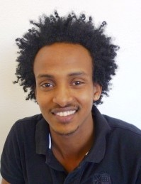

Persönliche Angaben
Name, Vorname: Hailu Samuel
Geburtsdatum: 2. Februar 1991
Zivilstand: ledig
Bewilligung: B
Nationalität: Eritrea
Einreise CH: 09.04.2012
Ausbildung
06/2003- 08/2010: "Academic School“, englischsprachige Schule in Asmara Eritrea, Abschluss mit Matura
09/1997- 06/2003: obligatorische Schulbildung, Dekamhare, Eritrea
Weiterbildung
13.07. - 07.08.15 Workshop Stellensuche „Dialog mit dem CH-Arbeitsmarkt“ SIGMAL Kommunikation + Training AG, Chur
04/2015 - heute Deutsch Abendkurs, Berufsschule Ziegelbrücke, Niveau B2
01/2015-04/2015 Integrationskurs, Fachstelle Integration, Glarus Gesetze und Pflichten in der Schweiz
01/2015 Praxis Assessment für Flüchtlinge, Stiftung Arbeitsgestaltung, Bad Ragaz: Praktische und theoretische Kenntnisse in der Gastronomie erlernen
08/2014-12/2014 Deutschkurs intensiv, HBS Rappersill, Niveau A2 bis B1
06/2014-08/2014 Deutschkurs intensiv, Migros Klubschule Glarus, Niveau A1
06/2004-09/2005: Informatikkurs „Computerunterhalt und Basiskonzepte“, Eritrea
Berufliche Erfahrung
06/2013-12/2014: Hauswart im Durchgangszentrum Rain, Ennenda
10/2010-01/2011: Nebenverdienst als Reinigungskraft, Gericht Khartum, Sudan
Sprachen
Tigrinia: Muttersprache
Deutsch: sehr gute Kenntnisse mündlich und schriftlich, Niveau B2.1
Englisch: sehr gute Kenntnisse mündlich und schriftlich, Niveau B2
Arabisch: Grundkenntnisse mündlich
Interessen
Ich möchte in der Schweiz gerne eine Ausbildung machen und interessiere mich für Computer, Elektronik und Grafik-Design. Ich bin kontaktfreudig und arbeite gerne mit Menschen.
Referenzen
Yvan Stauffacher, Koordinationsstelle Integration Flüchtlinge, Glarus, Tel. 055-646 67 00